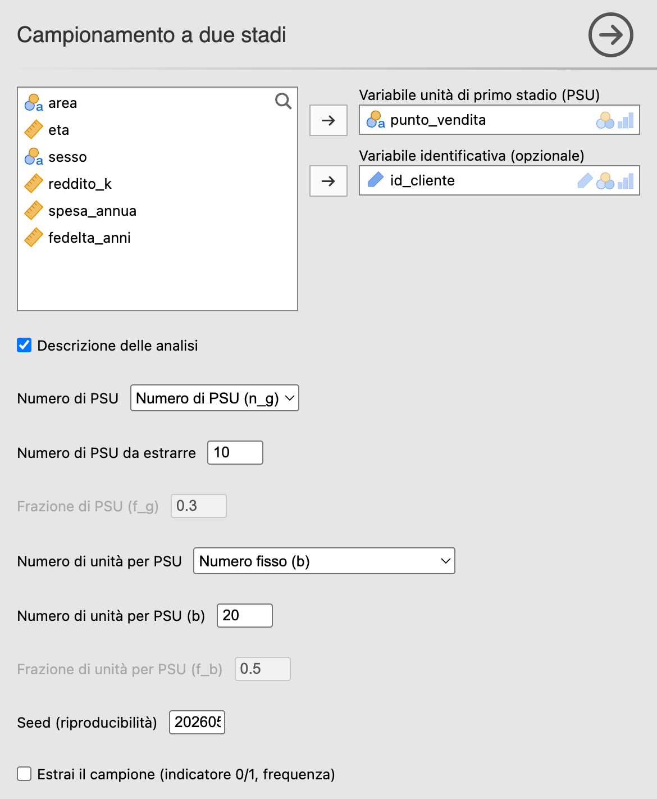
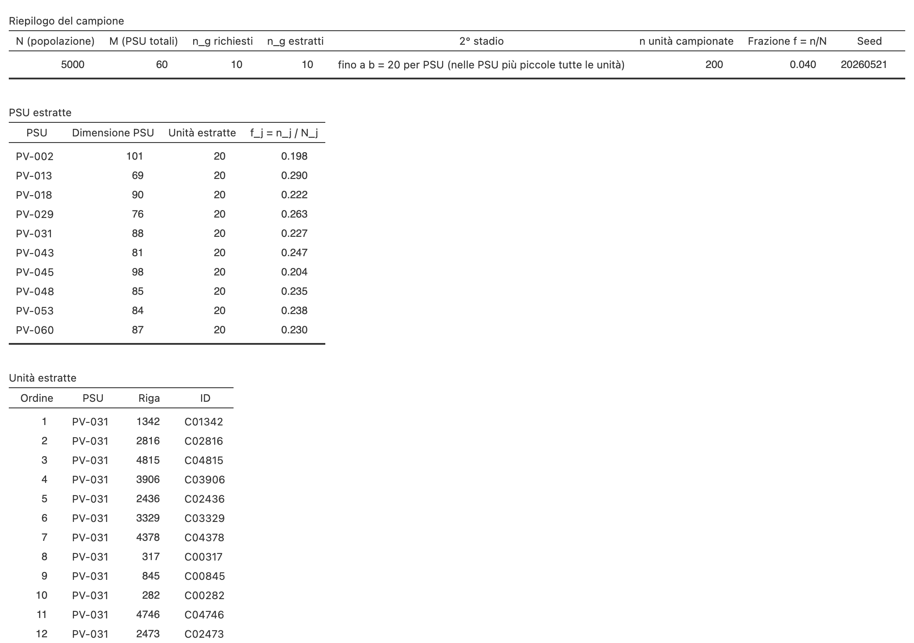

20 Campionamento a due stadi
Menu: Analisi → AnalisiMercato → Campionamento → Campionamento a due stadi
Variante del campionamento a grappoli: invece di rilevare tutte le unità dei grappoli estratti, si fa una seconda estrazione all’interno di ciascun grappolo (sotto-campionamento).
20.1 Quando usarlo
- Si ha lo stesso vantaggio logistico del campionamento a grappoli ma i grappoli sono troppo grandi per essere censiti integralmente.
- Si vuole bilanciare costo logistico e precisione: pochi viaggi, cioè poche unità primarie di campionamento (PSU, primary sampling units), ma con sotto-campionamento controllato delle unità secondarie di campionamento (SSU, secondary sampling units).
- Esempio classico: campionare comuni → entro i comuni estratti, campionare famiglie. (Con un livello intermedio, per esempio i quartieri, si avrebbe un disegno a tre stadi, che questa analisi non implementa.)
20.2 Il metodo in breve
- Primo stadio (PSU): estrazione casuale semplice, senza reinserimento, di \(m\) PSU (es. comuni) dalle \(M\) totali. Ogni PSU ha la stessa probabilità \(m/M\) di essere estratta, qualunque sia la sua dimensione.
- Secondo stadio (SSU): dentro ciascuna PSU estratta, sotto-campionamento di \(b\) unità.
Numerosità totale: \(n = m \cdot b\) (se allocazione fissa).
20.2.1 Allocazione del secondo stadio
| Modalità | Significato |
|---|---|
| Numero fisso (b) | Stesso numero \(b\) di unità in ogni PSU |
| Frazione f_b della PSU | Frazione \(f_b\) della dimensione di ogni PSU |
| Tutte le unità della PSU (= grappoli) | Si rilevano tutte le unità di ogni PSU estratta (= campionamento a grappoli) |
20.2.2 Varianza
Nel caso didattico di PSU della stessa dimensione \(B\), con estrazione casuale semplice senza reinserimento a entrambi gli stadi, indichiamo con \(S^2_{\bar Y}\) la varianza delle medie delle PSU e con \(\bar S^2_W\) la media delle varianze entro PSU. Posti \(f_1 = m/M\) e \(f_2 = b/B\) (il pedice 2st indica il disegno a due stadi):
\[ V(\bar y_{2\text{st}}) = \frac{1-f_1}{m} S^2_{\bar Y} + \frac{1-f_2}{m\,b} \bar S^2_W \]
La prima componente è la variabilità dovuta alla scelta delle PSU, la seconda quella introdotta dal sotto-campionamento delle unità dentro le PSU. Con PSU di dimensione diversa la formula non vale così com’è: resta però la lettura in due componenti.
In condizioni analogamente semplificate — PSU di numerosità simile e stesso numero \(b\) di unità estratte al secondo stadio — l’effetto della correlazione intra-classe, misurato dal Design Effect (Deff), si approssima con
\[ \text{Deff}_{2\text{st}} \approx 1 + (b-1)\rho \]
cioè lo stesso schema del disegno a grappoli, con \(b\) al posto di \(\bar B\). Ridurre \(b\) attenua l’effetto della correlazione intra-classe, ma il Deff complessivo dipende anche dal primo stadio, dalle probabilità di inclusione e dalla struttura delle PSU.
20.3 L’interfaccia

| Opzione | Default | Note |
|---|---|---|
| Variabile PSU | — | Cluster di primo stadio |
| Variabile identificativa | — | Opzionale, per SSU |
| Numero di PSU (modalità + n_g/f_g) | Numero di PSU (n_g); n_g = 3 | Primo stadio: Numero di PSU (n_g) o Frazione di PSU (f_g) |
| Numero di unità per PSU (modalità) | Numero fisso (b) | Secondo stadio: Numero fisso (b), Frazione f_b della PSU, Tutte le unità della PSU (= grappoli) |
| b / f_b | 5 / 0,5 | A seconda della modalità |
| Seed | 1 | |
| Estrai il campione | — | Colonna in_2STG |
20.4 Esempio pratico
Obiettivo. Estrarre 200 clienti con un disegno a due stadi: 10 punti vendita (PV) al primo stadio, 20 clienti in ciascuno al secondo stadio.
Passi:
popolazione_clienti.csv.- Analisi → AnalisiMercato → Campionamento → Campionamento a due stadi.
- Variabile PSU →
punto_vendita. - Variabile identificativa →
id_cliente. - Numero di PSU → 10.
- Numero di unità per PSU → Numero fisso; b → 20.
- Seed → 20260521.
Output.
- 10 PV selezionati (primo stadio).
- 20 clienti per PV (secondo stadio) → totale \(n = 200\).

Confronto con il campionamento a grappoli del § P-11: ipotizzando lo stesso \(\rho \approx 0{,}05\), qui \(\text{Deff} \approx 1 + (20-1) \cdot 0{,}05 \approx 2\), molto inferiore a 5,1. Il Deff non compare nell’output di questa analisi: si calcola con l’analisi Design Effect (§ P-15).
20.5 Esercizio guidato
Ripetere l’analisi con Numero di unità per PSU → Tutte le unità della PSU (= grappoli) e confrontare con il campionamento a grappoli del capitolo precedente. Cosa cambia?
20.6 Errori comuni
- ❌ PSU troppo poche: con pochissime PSU la stima della variabilità fra PSU è instabile. La soglia di 10–20 PSU, la stessa indicata per i grappoli nel § P-11, è un’indicazione pratica, non un confine statistico universale.
- ❌ \(b\) troppo alto: vanifica il vantaggio in Deff del sotto-campionamento.
- ❌ PSU di dimensioni molto diverse + allocazione fissa al secondo stadio: le probabilità complessive di inclusione delle unità risultano diverse fra loro. Nel modulo il rimedio è l’allocazione Frazione f_b della PSU: ogni unità ha allora probabilità di inclusione circa \((m/M) \cdot f_b\), uguale per tutte a meno degli arrotondamenti, ma la numerosità del campione dipende da quali PSU vengono estratte. La soluzione classica è estrarre le PSU con probabilità proporzionali alla dimensione e poi un numero fisso di unità in ciascuna, che rende uguali le probabilità complessive e fissa la numerosità; questa analisi però non la prevede, perché estrae le PSU sempre con probabilità uguali.